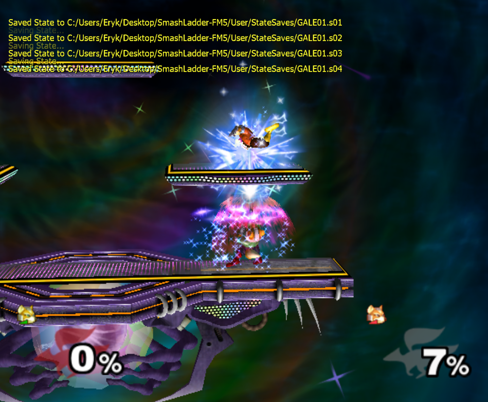
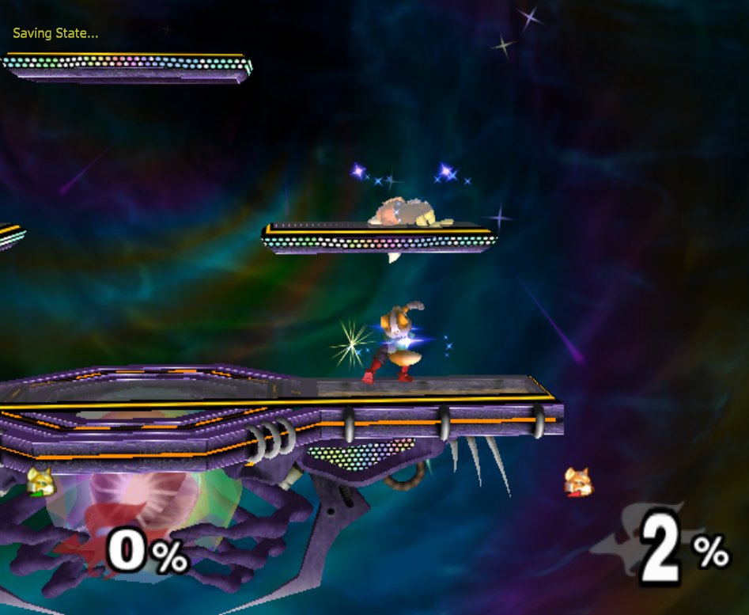
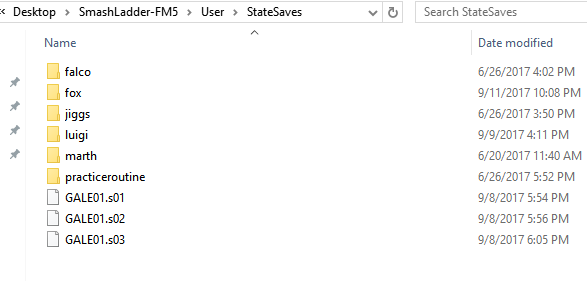

Cognitive Science Student, CS Enthusiast, Melee Player, Button Presser
finally got around to writing an autohotkey script to randomly switch between replays and now I'm no longer the worst fox at armada shining pic.twitter.com/DFG8mK640q
— Eryk (@Ambisinister_) September 9, 2017
Putting this at the very top to hopefully increase engagement: this is extremely imperfect and there are a few potential improvements that could be done to make it better. Here are a few of those potential improvements, and if you know of a solution to them please get in contact with me so that I can update this and have it be a better resource.
4.06/4.07 is likely the most important non-sentient tool you have to work on specific scenarios in your game, and doing this in Dolphin will allow you greater control over your savestate workflow which will save you time and greatly streamline your practice sessions.
A big problem you'll frequently run into doing 4.06 practice on console is the limitation that comes with only being able to do one replay at a time. This means that every time you turn the console off you need to redo the entire replay, and every time you switch up what you're practicing your old replay is lost. This is an enormous timesink, especially if you spend a lot of time crafting a really detailed replay, practice a single situation for maybe a half hour or so, and then replace it with something completely different.
The solution here is to use dolphin savestates - you can make your replay, save a state in dolphin with the replay running, make another replay, save a different state with that replay running, so on and so forth until you have up to ten concurrent replays in different savestate slots. You can preserve the replays forever this way, since they get stored as GALE01.sxx (where xx is the number slot it is, from 01 to 10). Savestates are around 17MB each, which is fairly large but you can still build yourself a pretty sizable collection assuming you have the hard drive space for it (for comparison, 880 savestates is about the same size as Overwatch).
Another nice thing about this is that you can practice mixup situations this way, using a simple randomized autohotkey script. So if you have the same situation with 7 different variations (e.g. the same recovery with 7 firefox angles) then you can practice reacting to the angle, timing your input, and edgeguarding.
You can build up a database of drillable situations and copy-paste replays into the root StateSaves directory (and re-rename it to GALE01.sxx of course) which saves you plenty of time and increases the longevity of your replays. You can now focus on making your replays as detailed as possible and get accurate practice on that situation forever, instead of rushing through it just to stay vaguely sharp at it.
Steamlining this process is pretty straightforward, but requires you to learn a workflow that might be a bit complicated at first. This also assumes you're comfortable making replays normally in 20XX, so if you're not then you should watch these.
First, you'll want to turn off in-game music. The last thing you want is to associate a certain timing with a specific part of the dreamland theme, instead of actually practicing reacting to specific mixups - just practice with your own music in the background. You can use the "Game Music OFF" Gecko code, but keep in mind that any replays you make without this code don't super play nice when you enable this. You'll also want to turn off stuff like rainbow FD, or just things that would tip you off which replay was which before you had a practicable cue to do so.
Next, you'll want to create your replay scenario up until the "branch point". To truly create good mixup replays, you'll want the first parts of each replay to be completely identical - I usually create a replay with a single setup leading up to it (i.e. both characters spotdodge) and then make multiple savestates on the frame where you want the replays to become different.

Then, for each alternate path, do the following:

This is a bit much to get through text so here's a short video in which I create a few replays to practice reacting to shffl nair in the fox ditto in order to trade with upsmash. (note: forgot to turn off rainbow FD, whoops). Making 5 replays this way took 9 minutes and that's even with me completely botching one and having to redo it, so it's pretty quick once you get the hang of it.
To be used in dolphin, you need to have the savestates in your dolphin directory in /dolphin/User/StateSaves, saved as GALE01.sxx - you can rename savestates that are in s01 format to, say, s10 with no issue. So, once you make your savestates, you can copy these files somewhere and rename them, and using them again is just a matter of recopying them back to the /StateSaves/ root.
Personally, I've started building a small database of replays to use whenever I want to practice something specific.

First and foremost, you'll want to download AutoHotkey. What this program does is allow you to create basic macros for your computer - map a certain button combination to a button, randomly select between keypresses, move files around your computer, the whole shebang. We're going to learn to write scripts to randomly swap between replays, which will let us practice a replay without 100% knowing which replay we are practicing. The random switching between them roughly emulates the function of the programmable dummy in training mode of other fighting games, which is a pretty useful feature to have.
Your basic building blocks are:
The level of difficulty of this script is about as basic as you could want - the only annoying stipulations are that you need to explicitly tell ahk to hold the key down for a short while since sometimes just sending the number will not trigger the replay.
An example of a script with three replays would be the following
You also might want to manage your savestates automatically instead of manually copying and pasting them to the StateSaves folder. This, too, is pretty trivial in ahk. You can even try automating a practice routine, which is a little tedious to configure (you need to manually figure out times for each replay, or press a key on your keyboard to advance to the next replay) but an example of that might look like this
If this gets fleshed out or streamlined, it could be a noticeable improvement to how you go about practicing certain situations. While it's already possible to practice reacting to certain things using 4.06 (techchasing comes to mind), being able to arbitrarily map out a decision tree and randomly select between them lends a great deal of extra power to practicing with replays.
If any noticable improvements to this idea are made, I'll update this document with them. As I mentioned earlier, if you have a solution to the input lag / WiiU-GCC-Adapter -> AHK interfacing, please don't hesitate to get in contact with me.
Posted 9/11/17